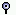
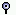

Behavior of the mouse in general, and the naming of the buttons is covered in the chapter on the overall user interface (see Chapter 7).
This action is generally used to select an item for subsequent operations.
Within the hierarchical display, elements which have
sub-hierarchies may be indicated by
 when the hierarchy is
hidden and
 when the hierarchy is
open.
when the hierarchy is
hidden and
 when the hierarchy is
open.
When these icons are displayed, the display of the hierarchy is toggled by button 1 click on these icons.
 | Tip |
|---|---|
It is possible to turn off the display of these icons using the Flat button in the navigation pane. | |
Button 1 click over the headline of any to-do item will cause its details to be shown in the To Do Item tab of the details pane. That tab is automatically selected if it is not currently visible.
When applied to the folder icon alongside a hierarchy category, this will cause the display of that hierarchy to be toggled.
When applied to a headline, button 1 double click will show the diagram for the artifact to which the to-do item applies in the editing pane and select the artifact on the diagram using an appropriate clarifier (the artifact may be highlighted, underlined with a wavy line or surrounded by a colored box as appropriate).